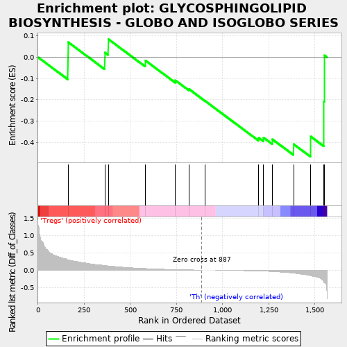
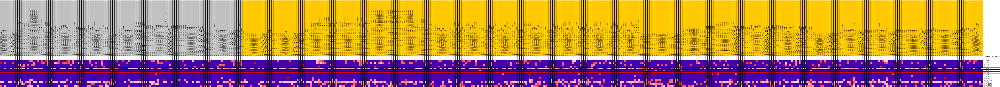
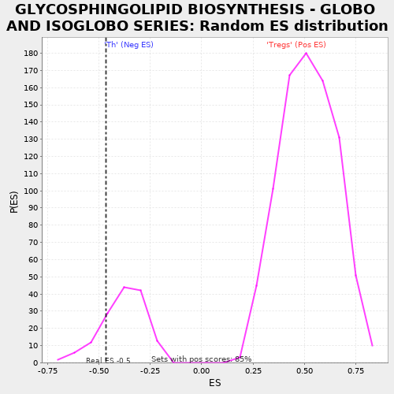

| | | Dataset | expr.pheno.cls#Tregs_versus_Th |
| Phenotype | pheno.cls#Tregs_versus_Th |
| Upregulated in class | Th |
| GeneSet | GLYCOSPHINGOLIPID BIOSYNTHESIS - GLOBO AND ISOGLOBO SERIES |
| Enrichment Score (ES) | -0.46760032 |
| Normalized Enrichment Score (NES) | -1.2243347 |
| Nominal p-value | 0.22297297 |
| FDR q-value | 0.5058296 |
| FWER p-Value | 0.76 |
Table: GSEA Results Summary

Fig 1: Enrichment plot: GLYCOSPHINGOLIPID BIOSYNTHESIS - GLOBO AND ISOGLOBO SERIES
Profile of the Running ES Score & Positions of GeneSet Members on the Rank Ordered List
| PROBE | DESCRIPTION
(from dataset) | GENE SYMBOL | GENE_TITLE | RANK IN GENE LIST | RANK METRIC SCORE | RUNNING ES | CORE ENRICHMENT | | 1 | HEXA | na | | | 162 | 0.298 | 0.0711 | No |
| 2 | HEXB | na | | | 362 | 0.134 | 0.0219 | No |
| 3 | NAGA | na | | | 380 | 0.126 | 0.0849 | No |
| 4 | GLA | na | | | 581 | 0.048 | -0.0156 | No |
| 5 | FUT1 | na | | | 744 | 0.018 | -0.1091 | No |
| 6 | FUT9 | na | | | 817 | 0.010 | -0.1497 | No |
| 7 | A4GALT | na | | | 905 | 0.000 | -0.2058 | No |
| 8 | B3GALNT1 | na | | | 1195 | -0.023 | -0.3782 | No |
| 9 | B3GALT5 | na | | | 1221 | -0.028 | -0.3778 | No |
| 10 | GBGT1 | na | | | 1269 | -0.038 | -0.3855 | No |
| 11 | ST3GAL2 | na | | | 1384 | -0.086 | -0.4083 | Yes |
| 12 | FUT2 | na | | | 1477 | -0.161 | -0.3726 | Yes |
| 13 | ST8SIA1 | na | | | 1549 | -0.358 | -0.2075 | Yes |
| 14 | ST3GAL1 | na | | | 1552 | -0.369 | 0.0084 | Yes |
Table: GSEA details [plain text format]

Fig 2: GLYCOSPHINGOLIPID BIOSYNTHESIS - GLOBO AND ISOGLOBO SERIES
Blue-Pink O' Gram in the Space of the Analyzed GeneSet

Fig 3: GLYCOSPHINGOLIPID BIOSYNTHESIS - GLOBO AND ISOGLOBO SERIES: Random ES distribution
Gene set null distribution of ES for GLYCOSPHINGOLIPID BIOSYNTHESIS - GLOBO AND ISOGLOBO SERIES